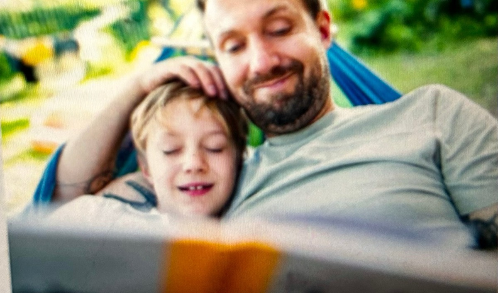
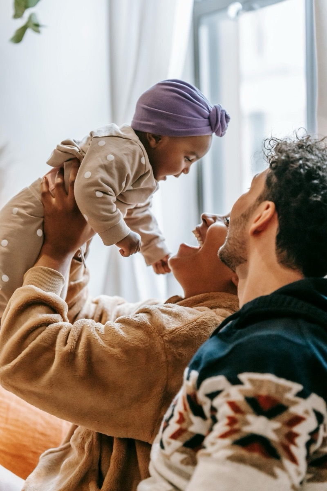
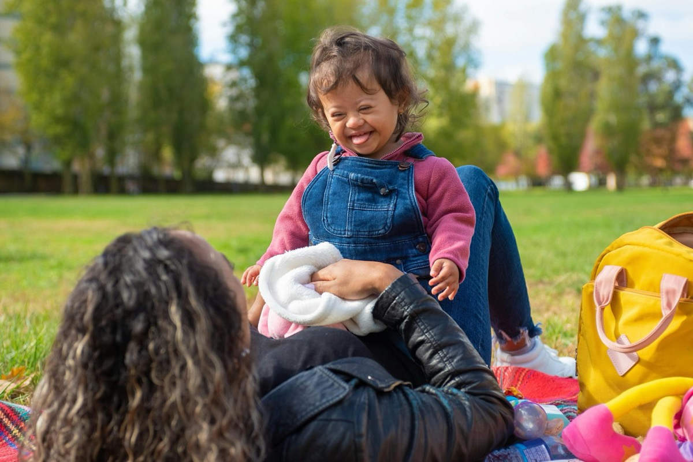

Approach
Doors into the same room
Attachment, regulation, communication, peer skills — different doors into the same room. Presence first. The rest grows from there.
The through-line
A room, then doors
The methods I use look different on paper — but they all begin in the same place and unfold in the same direction.
Presence
Being there. Really there. Phone down, agenda dropped.
Body
Bodies regulate together before words do — rhythm, touch, breath. Theraplay lives here; EFT tapping joins in late 2026.
Connection
Eye contact. Shared attention. Ridiculous voices. Joint engagement is the soil for everything else.
Play
The native language. Where shared attention becomes back-and-forth. Project ImPACT and ESDM live here.
Learning
Words. Skills. Friendships. They grow here — not in the chair. PEERS scaffolds the peer side.

A reframe
Most "won't" is for a reason
Behavior that looks like "can't" or "won't" is usually a kid who's overwhelmed, exhausted, mistrusting, or scared. Address the conditions, and the doing becomes possible.
We do less than you'd think. The less is what works.
The promise
Inside the day you already have
Not twelve new things to add to your week. The leverage we're after is already in your existing day — at breakfast, at the park, at the impossible 5pm hour. We find it together.

Why this, now
What screens can't do
Early childhood work is, ultimately, about human-to-human connection — which matters more in the AI era, not less.
A trustworthy adult patiently showing up. Easy-going, flexible, encouraging, inspiring. The screen can't be that. We can.

Let's talk
Want to talk about your kid?
A free, no-pressure discovery call. Bring whatever's on your mind.